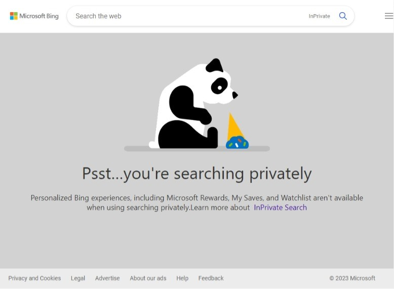

GUIDE: Optimize search
Search results have been around for decades. Managing search results can be tricky at times. Bing offers customizations to trending news; Google has an advanced search
feature, improving search results with complex query manipulations.
Daily news results can be optimized for to personalized interests, configured in the settings:
- What's trending: Bing news categories provided by topic selection.
- Added interests: Refresh personal interests.
- Email updates: Receive emails with related news.
- Search predictions: Account histories help with search.
